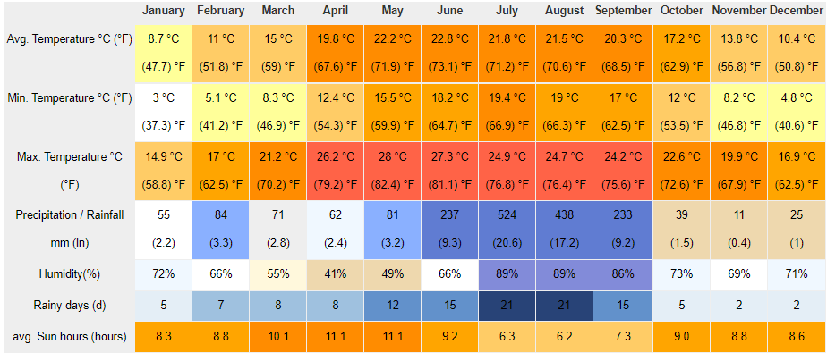
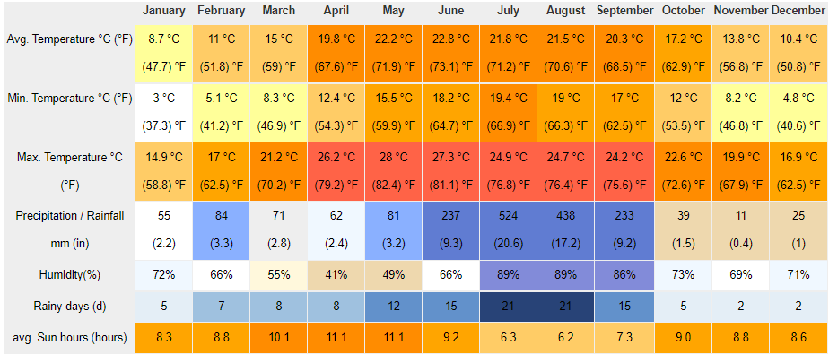

About Uttarakhand
Geography
Uttarakhand has a total geographical area of 53,483 km2, of which 86% is mountainous and 65% is covered by forest. Most of the northern parts of the state are part of Greater Himalayan ranges also known as Himadri, covered by the high Himalayan peaks and glaciers, while the lower foothills were densely forested till denuded by the British log merchants and later, after independence, by forest contractors. Recent efforts in afforestation, however, have been successful in restoring the situation to some extent. The unique Himalayan ecosystem plays host to many animals (including bharal, snow leopards, leopards and tigers), plants and rare herbs. Two of the India's great rivers, the Ganges and the Yamuna take birth in the glaciers of Uttarakhand state, and are fed by myriad lakes, glacial melts and streams. It is fed by Ganges and Yamuna rivers.
Climate
Climate. The climate of Uttarakhand is temperate, marked by seasonal variations in temperature but also affected by tropical monsoons. ... In the southeast, May is the warmest month, with daily temperatures normally reaching the low 100s F (about 38 °C) from a low around 80 °F (27 °C).

 

Flora & Fauna
Uttarakhand is the state located at the foothills of the snow clad Himalayas with lush green vegetation. ... Major fauna in the region are Himalayan Bear, Musk Deer, the wild Goat Ghoral, Bharal or Blue Goat, Wolves, Snow Leopards and varieties of deer such as Barking Deer.

Demographics
According to the 2011 Census of India, Uttarakhand has a population of 10,086,292 comprising 5,137,773 males and 4,948,519 females, with 69.77% of the population living in rural areas. The state is the 20th most populous state of the country having 0.83% of the population on 1.63% of the land. The population density of the state is 189 people per square kilometre having a 2001–2011 decadal growth rate of 18.81%. The gender ratio is 963 females per 1000 males. The crude birth rate in the state is 18.6 with the total fertility rate being 2.3. The state has an infant mortality rate of 43, a maternal mortality rate of 188 and a crude death rate of 6.6.

Culture
Famous Food
1. Gahat ke parathe
2. Aalu ka Jhol
3. Kafuli
4. Phaanu
5. Baadi
6. Chainsoo
7. Aalu Gutook
8. Kumaoni Raita
9. Sisunak Saag
10. Dubuk
11. Arsa
12. Jhangora Ki Kheer

Tradional Wear
The women in Uttarakhand wear a long skirt that is called Ghagri along with a choli and orni.

Folk Art
Aipan art:
Aipan is a ritualistic folk art, native to the Kumaon region of Uttarakhand. It is drawn to commemorate auspicious occasions, festivals and even rituals performed during death of a person. ... The art form is made by women, and the knowledge is passed on through the generations from mothers to daughters.